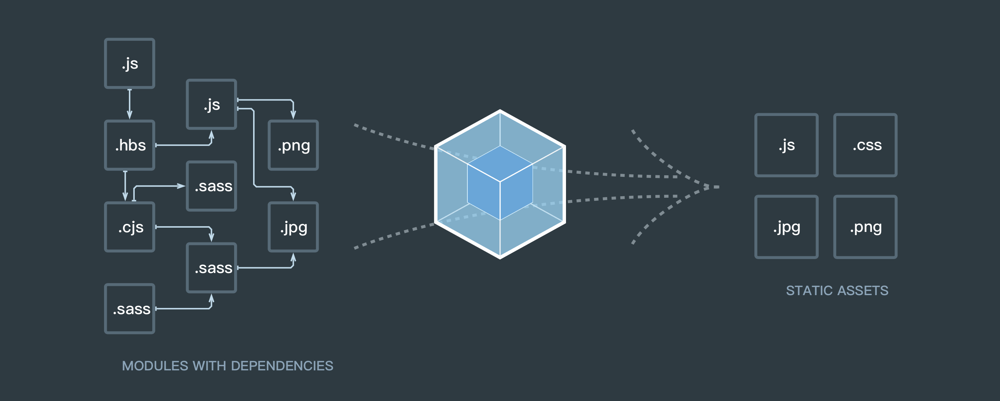
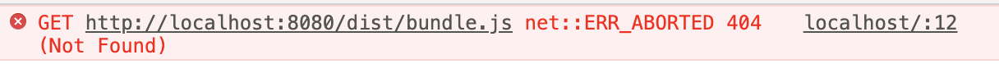
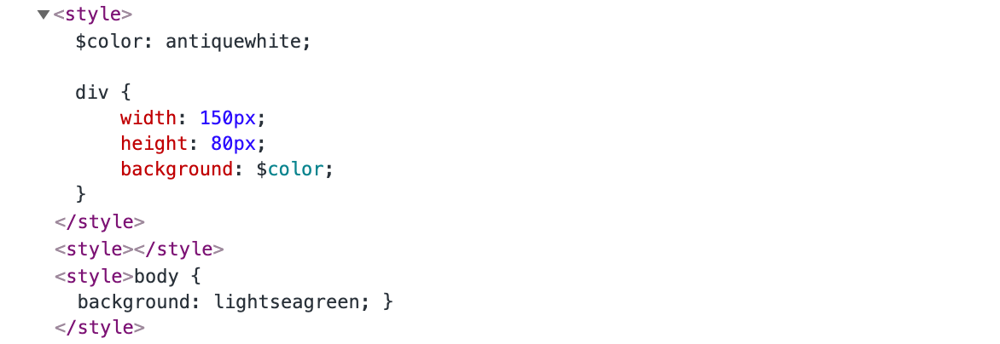
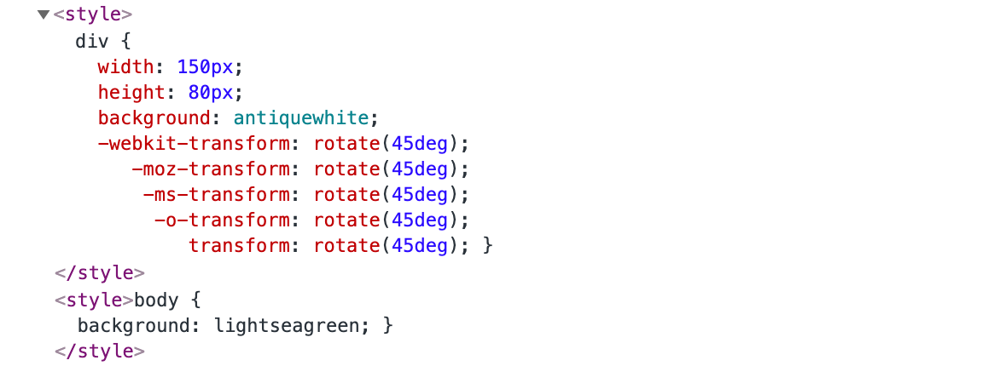
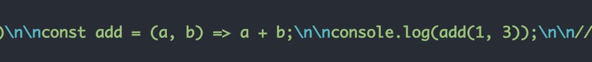
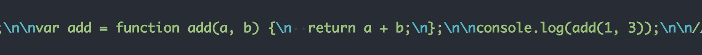

搭建webpack开发环境
随着 web 应用的日益复杂，前端开发技术也在不断革新与进步，新的开发思想、规范和框架不断涌现
新的语言及其规范 —— ES6、TypeScript
模块化 —— CommonJS、ES6 模块化
模块化可以解决命名冲突、增强代码的复用性、提高代码可维护性
1
2
3
4
5
6
7
8
9// a.js
var obj = {
a: 1
}
module.exports = obj
----------------------------------------------------------
// b.js
var b = require('./a')
console.log(b.a) // => 1新框架 —— Vue、React、Angular 等
尽管这些新特性和新技术很大的提升了前端开发的效率，但是他们都无法直接运行在浏览器环境下，必须将这些代码转换成可以运行在浏览器中的 HTML、CSS、JavaScript 代码
而在浏览器中运行 JavaScript 有两种方式
对每个功能添加一个
<script>...</script>会导致代码难于扩展，且损耗性能
使用一个大的 .js 文件
文件体积可能过大，可读性极差，不利于维护
最终要将源代码转换为合适线上可执行的代码，我们必须进行构建，可能需要以下几个功能
代码转换：TypeScript 编译成 JavaScript、SCSS 编译成 CSS 等
文件优化：压缩 JavaScript、CSS、HTML 代码，压缩合并图片等
代码分割：提取多个页面的公共代码、提取首屏不需要执行部分的代码让其异步加载
模块合并：在采用模块化的项目里会有很多个模块和文件，需要构建功能把模块分类合并成一个文件
自动刷新：监听本地源代码的变化，自动重新构建、刷新浏览器
代码校验：在代码被提交到仓库前需要校验代码是否符合规范，以及单元测试是否通过
自动发布：更新完代码后，自动构建出线上发布代码并传输给发布系统
构建其实是工程化、自动化思想在前端开发中的体现，把一系列流程用代码去实现，让代码自动化地执行这一系列复杂的流程
webpack 就是常用的构建工具之一
webpack 简介
什么是 webpack
官方文档对 webpack 的定义如下
At its core, webpack is a static module bundler for modern JavaScript applications. When webpack processes your application, it internally builds a dependency graph which maps every module your project needs and generates one or more bundles.
webpack 是一个现代 JavaScript 应用程序的静态模块打包器(module bundler)。当 webpack 处理应用程序时，它会递归地构建一个依赖关系图(dependency graph)，其中包含应用程序需要的每个模块，然后将所有这些模块打包成一个或多个 bundle
在 webpack 里一切文件皆模块，通过 Loader 转换文件，通过 Plugin 注入钩子，最后输出由多个模块组合成的文件
webpack 专注于构建模块化项目

四个核心概念
入口 entry
入口起点(entry point)指示 webpack 应该使用哪个模块，来作为构建其内部依赖图的开始。进入入口起点后，webpack 会找出有哪些模块和库是入口起点（直接和间接）依赖的，每个依赖项随即被处理，最后输出到称之为 bundles 的文件中
可以通过在
webpack.config.js配置中配置 entry 属性，来指定一个入口起点（或多个入口起点）。默认值为 ./src1
2
3module.exports = {
entry: './src/index.js'
};输出 output
output 属性控制输出创建的 bundles 的位置，以及如何命名这些文件，默认值为 ./dist，可以在
webpack.config.js中配置1
2
3
4
5
6
7
8
9const path = require('path');
module.exports = {
entry: './src/index.js',
output: {
path: path.resolve(__dirname, 'dist'),
filename: 'bundle.js'
}
};Loader
Loader 的作用是处理非 JavaScript 文件，它可以将所有类型的文件转换为 webpack 能够处理的有效模块，然后再打包
在 webpack 的配置中 Loader 有两个目标：
test 属性，用于标识出应该被对应的 Loader 进行转换的某个或某些文件
use 属性，表示进行转换时，应该使用哪个 Loader
1
2
3
4
5
6
7
8
9
10
11
12
13const path = require('path');
const config = {
output: {
filename: 'bundle.js'
},
module: {
rules: [{
test: /\.txt$/,
use: 'raw-loader'
}]
}
};插件 Plugins
插件的范围包括，从打包优化和压缩，一直到重新定义环境中的变量。插件接口功能极其强大，可以用来处理各种各样的任务。
模式
webpack 有两种模式
开发模式 development
生产模式 production
通过选择 development 或 production 之中的一个，来设置 mode 参数，可以启用相应模式下的 webpack 内置的优化
1 | module.exports = { |
webpack 的安装
通过 npm 安装
要安装最新版本，运行
1 | $ npm install --save-dev webpack |
要安装特定版本，运行
1 | $ npm install --save-dev webpack@<version> |
如果使用 webpack 4+ 版本，则还需要安装 CLI，其作用是解析用户传递的参数
1 | $ npm install --save-dev webpack-cli |
简单使用
一个简单的 demo
webpack 默认支持模块写法，包括 CommonJS规范和 ES6 模块写法
文件目录
1 | webpack-test |
源代码如下
1 | module.exports = 'hello world'; |
1 | let result = require('./a'); |
使用 webpack 默认支持的 0 配置的方式打包，在package.json中配置 scripts 脚本
1 | "scripts": { |
执行
1 | $ npm run build |
默认会调用node_modules/.bin下的webpack命令，内部会调用webpack-cli解析用户参数进行打包。默认会以src/index.js作为入口文件，以dist/main.js为出口
也可以使用
npx webpack命令
在命令行运行npm run build之后可以看到如下信息
1 | Hash: c5bbde39c20e50a11e89 |
打包后文件目录变为
1 | webpack-test |
通过 HTML 文档引入dist/main.js后可以看到，控制台成功输出hello world
与此同时可以看到，命令行还提示了一个 warning，表示 webpack 默认使用production模式
1 | WARNING in configuration |
在package.json中修改和添加 scripts 脚本，以分别支持生产模式和开发模式
1 | "scripts": { |
分别运行npm run build和npm run dev，可以看到在生产模式下打包后的 main.js 是压缩过的，而开发模式下并未压缩
配置文件
我们在使用 webpack 打包时通常不会采取 0 配置的方式，而是使用配置文件来进行配置
webpack 默认通过 webpack.config.js 文件来描述入口、出口等配置信息
由于 webpack 是基于 nodejs 语法以及 CommonJS 规范，因此配置文件默认导出的是配置对象
1 | const path = require('path'); |
在设置路径时为防止以后更改导致的错误，一般采用绝对路径，使用自带的path模块解析
运行脚本后可以看到在 dist 中生成了bundle.js
采用这种配置方式时，如果不同模式对应的配置项不同，则切换模式是需要修改大量代码，因此，我们往往将配置文件根据不同的模式拆分，并将不同模式配置文件放在一个 build 文件夹中，同时通过在脚本中添加--config选项来指定使用的配置文件
1 | webpack |
有两种编写配置文件的方式
设置两个脚本分别指向不同的配置文件，两种模式的配置文件再分别引用
webpack.base.conf.js中共同的配置进行合并1
2
3
4"scripts": {
"build": "webpack --config ./build/webpack.prod.conf.js",
"dev": "webpack --config ./build/webpack.dev.conf.js"
}设置两个脚本指向都
webpack.base.conf.js，再通过环境参数进行区分1
2
3
4"scripts": {
"build": "webpack --env.production --config ./build/webpack.base.conf.js",
"dev": "webpack --env.development --config ./build/webpack.base.conf.js"
}
可以通过 webpack-merge 来合并配置
1 | $ npm install --save-dev webpack-merge |
以第二种方式为例，配置文件如下
1 | const path = require('path'); |
1 | module.exports = { |
1 | module.exports = { |
webpack-dev-server
在实际开发过程中，我们不可能反复执行npm run build来查看最终效果，打包后的代码也不便于调试，并且可能需要提供 HTTP 服务而不仅仅是预览本地文件，这时我们可以通过 webpack 提供的开发工具 devServer 来解决以上几个问题
1 | $ npm install --save-dev webpack-dev-server |
devServer 会启动一个 HTTP 服务器用于服务网页请求，同时会帮助启动 webpack ，并接收 webpack 发出的文件更变信号，通过 WebSocket 协议自动刷新网页做到实时预览，同时支持 Source Map，方便调试
可以将 scripts 中的配置做如下修改，npm run dev用于启动 devServer，npm run dev:build用于打包开发模式下的源代码
1 | "scripts": { |
执行npm run dev，在命令行中可以观察到
1 | ℹ ｢wds｣: Project is running at http://localhost:8080/ |
这意味着 devServer 启动的 HTTP 服务器监听在 http://localhost:8080/ ，devServer 启动后会一直驻留在后台保持运行，访问这个网址就能获取项目根目录下的 index.html
打开地址后会发现浏览器报错，同时也会发现，文件目录并没有改变，也即是并没有实际生成打包后的文件

这是因为 devServer 是在内存中打包文件，在要访问输出的文件时，必须通过 HTTP 服务访问，而且，devServer 不会理会配置文件里配置的出口属性，所以要获取打包后 JavaScript 文件的正确 URL 是 http://localhost:8080/main.js ，而对应的 index.html 应该修改为
1 | <html lang="en"> |
要对 devServer 进行配置，必须在配置文件中添加 devServer 配置对象，通常配置在开发模式下的配置文件中
1 | const path = require('path'); |
port
用于配置 devServer 服务监听的端口，默认使用 8080 端口。如果 8080 端口已经被其它程序占有就使用 8081，以此类推
compress
配置是否启用 gzip 压缩
contentBase
配置 devServer HTTP 服务器的文件根目录
执行npm run dev后，打开 http://localhost/2000/bundle.js ，可以看到打包后的文件
插件的使用
以 HtmlWebpackPlugin 和 为例介绍插件的使用
HtmlWebpackPlugin
在执行打包命令后，我们必须手动编写 HTML 文件并引用打包生成的 JavaScript 文件，可以通过 HtmlWebpackPlugin 插件根据模板生成对应的 HTML 文件并引用 js
1 | npm install --save-dev html-webpack-plugin |
在public文件夹下创建模板文件
1 | webpack |
1 | <html lang="en"> |
在build/webpack.base.conf.js中添加插件
1 | // code ... |
执行npm run build后可以得到压缩后的文件
1 | <html lang=en><head><title>Document</title></head><body><div id=app></div><script type=text/javascript src=bundle.js></script></body></html> |
CleanWebpackPlugin
CleanWebpackPlugin 可以帮助我们清除出口文件夹中不必要的文件
假设上一次打包后生成了如下的 dist 文件夹
1 | webpack-test |
而下一次打包仅生成bundle.js和index.html，可以进行如下配置
1 | // code ... |
再次打包后文件结构为
1 | webpack-test |
打包非 JavaScript 文件
由于 webpack 自身只理解 JavaScript，而前端开发中存在大量 CSS 文件以及图片等静态资源，直接对其打包会报错
假设对如下源代码进行打包
1 | webpack-test |
1 | import './style.css'; |
1 | body { |
在命令行中会报错：
1 | ERROR in ./src/style.css 1:4 |
可以看到 webpack 提示我们需要通过 Loader 让 webpack 处理这些非 JavaScript 文件
Loader 可以将所有类型的文件转换为 webpack 能够处理的有效模块，然后可以利用 webpack 的打包能力，对它们进行处理
默认 Loader 的顺序是从下到上、从右向左执行，Loader 的使用包括以下几个部分
test：匹配处理文件的扩展名的正则表达式
use：Loader 名称，就是你要使用模块的名称
include/exclude：手动指定必须处理的文件夹或屏蔽不需要处理的文件夹
options：为 Loaders提供额外的设置选项
处理 CSS 文件
处理 CSS 文件需要两个 Loader —— css-loader 和 style-loader
1 | $ npm install --save-dev css-loader style-loader |
在build/webpack.base.conf.js中添加 Loader
1 | // code ... |
执行npm run dev后可以看到样式正常加载

实际开发中我们经常会使用 CSS 预处理器，不同的 CSS 预处理器需要用不同的 Loader 来解析
sass/scss: sass-loader node-sass
less: less-loader less
stylus: stylus-loader stylus
以 scss 为例，首先安装相关 npm 包
1 | $ npm install node-sass sass-loader --save-dev |
安装完成后在src目录中添加如下样式文件并在index.js中引入
1 | $color: antiquewhite; |
添加相关配置
1 | rules: [ |
可以看到 CSS 文件和 SCSS 文件均成功加载
上述样式文件都是通过 JavaScript 文件加载，如果在一个样式文件中引入另一个样式文件呢？
1 | webpack-test |
1 | @import './temp.css'; |
1 | @import './style.scss'; |
1 | import './style.css'; |
此时src/style.scss中的样式并没有成功加载，检查页面代码可以看到，SCSS 并没有成功被转换成 CSS，因此需要在 use 中添加 sass-loader 并修改 css-loader 的参数

1 | rules: [ |
importLoaders 用于配置css-loader 作用于 @import 的资源之前有多少个 loader
在 CSS 文件打包过程中属性前缀的添加和处理也是很重要的一部分，需要使用 postcss-loader 和 autoprefixer
1 | $ npm install autoprefixer postcss-loader --save-dev |
前缀的添加是为了保证样式在不同的浏览器中都能使用，那么就需要指定要兼容多少浏览器，在根目录下添加一个.browserslistrc文件
1 | webpack-test |
假设要兼容 99.5% 的浏览器
1 | cover 99.5% |
1 | $color: antiquewhite; |
同时，使用 postcss-loader 还需要在根目录下添加一个postcss.config.js配置文件
1 | module.exports = { |
配置完成后运行，可以看到，样式成功加载，检查元素得

在经过之前的几个 Loader 转换后，CSS 可以被打包进 JavaScript 文件，但是这么做不利于 DOM 的渲染，可以使用插件将 CSS 文件抽离出来，在生产模式单独打包，并进行压缩
1 | # 抽离 CSS 插件 |
配置代码如下
1 | // code ... |
1 | const OptimizeCSSAssetsPlugin = require('optimize-css-assets-webpack-plugin'); |
执行npm run build后
1 | webpack-test |
1 | div{width:150px;height:80px;background:#faebd7;-webkit-transform:rotate(45deg);-moz-transform:rotate(45deg);-ms-transform:rotate(45deg);-o-transform:rotate(45deg);transform:rotate(45deg)}body{background:#20b2aa} |
处理图片和 icon
图片的处理
对图片的处理也需要引入 Loader
1
$ npm install file-loader --save-dev
在 JavaScript 中引入图片
src/index.js 1
2
3
4
5import test from './test.jpg';
let img = document.createElement('img');
img.src = test;
document.body.appendChild(img)webpack 的配置为
webpack.base.conf.js 1
2
3
4
5
6
7
8
9{
test: /\.(jpe?g|png|gif)$/,
use: {
loader: 'file-loader',
options: {
name: 'img/[name].[ext]'
}
}
}也可以使用 url-loader 将满足条件的图片转化成 base64，不满足条件的 url-loader 会自动调用 file-loader 来进行处理
webpack.base.conf.js 1
2
3
4
5
6
7
8
9
10{
test: /\.(jpe?g|png|gif)$/,
use: {
loader: 'url-loader',
options: {
name: 'img/[name].[ext]',
limit: 100 * 1024
}
}
}icon 的处理
同样使用 file-loader，webpack 的配置为
webpack.base.conf.js 1
2
3
4{
test: /woff|ttf|eot|svg|otf/,
use: 'file-loader'
}
处理 JavaScript 文件
将 ES6 编译成 ES5，通常使用 babel
1 | $ npm install @babel/core @babel/preset-env babel-loader --save-dev |
假设有如下模块，该模块使用 ES6 的箭头函数语法，在部分浏览器中可能无法使用，我们可以使用 babel 将其编译为 ES5 语法
1 | const add = (a, b) => a + b; |
不编译时，运行npm run dev:build，可以在打包后的文件中找到

使用 babel 编译 ES6 需要进行如下配置，并在根目录下添加.babelrc
1 | rules: [ |
1 | { |
配置完成后再次打包

ES6 中还有其他一些实现需要安装其他的插件，比如class {}，具体查询文档
处理 Vue
首先安装 Vue.js
1 | $ npm install vue vue-property-decorator --save |
假设有如下文件
1 | <template> |
1 | import Vue from 'vue'; |
要将 .vue 文件转换成 webapck 可以打包的文件，我们还需要安装
1 | $ npm install vue-loader vue-template-complier --save-dev |
还需要添加如下配置
1 | const VueLoaderPlugin = require('vue-loader/lib/plugin') |